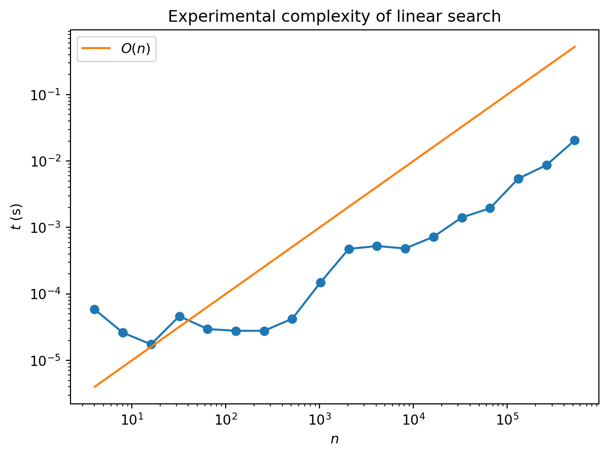
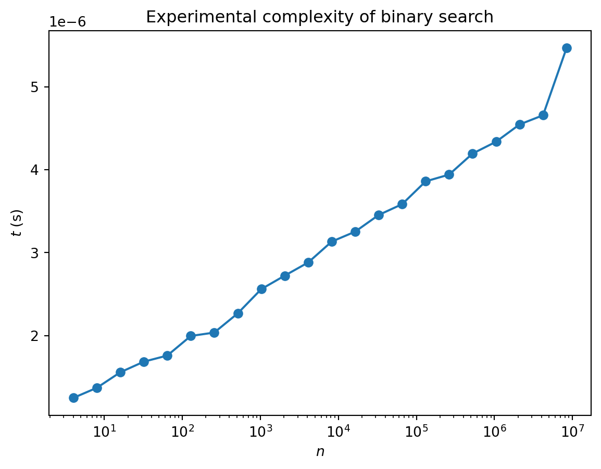
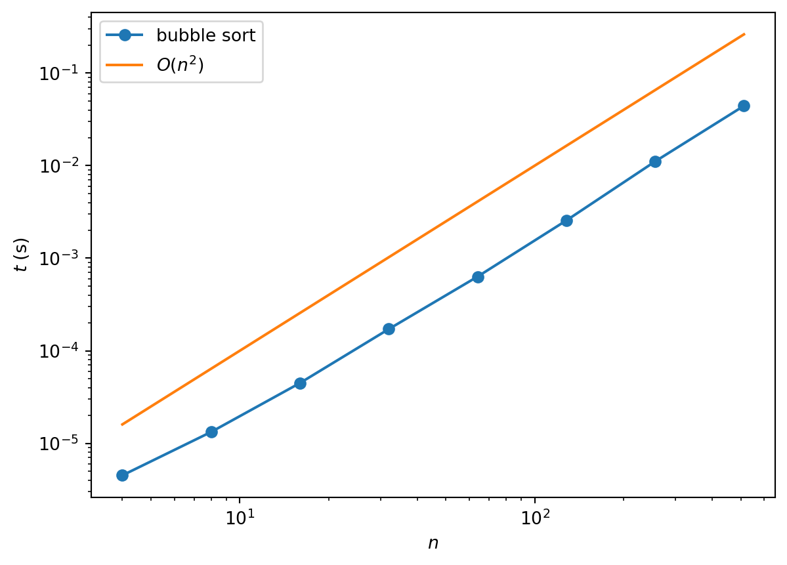
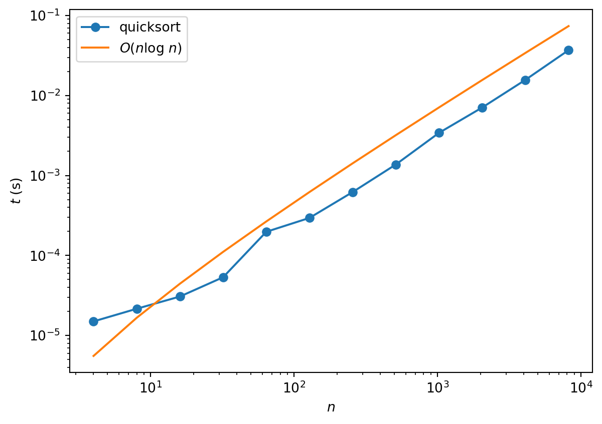
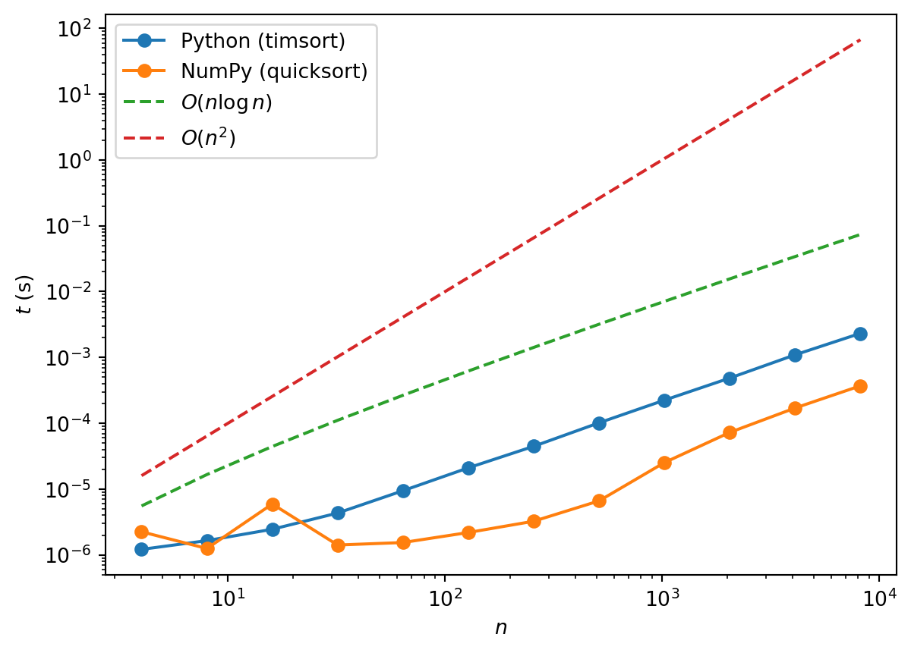

def linear_search(x, val):
"Return True if val is in x, otherwise return False"
for item in x:
if item == val:
return True
return FalseAlgorithms and computational complexity
1 First example: multiplication
How hard is it to multiply numbers? The bigger they are, the harder it is, as you well know. You also know that computers are very good at multiplying, so once you’ve switched from multiplying numbers yourself to multiplying them on a computer, you may well be tempted to forget about how hard it is. Nevertheless, computers find big numbers harder than small numbers. How much harder?
If you remember how you learnt to multiply numbers at school, it probably went something like this: 1
| × | 1 3 |
2 2 |
3 1 |
|
|---|---|---|---|---|
_ _ 3 |
_ 2 6 |
1 4 9 |
2 6 |
3 |
| 3 | 9 | 4 | 8 | 3 |
For \(n\) digits we have to perform \(n^2\) single digit multiplications. We then have to add together the \(n\) resulting \(n\)-digit numbers. This is another \(n^2\) operations. Thus the overall number of operations is proportional to \(n^2\): doubling the number of digits will make the problem four times harder.
Exactly how long this takes to perform in your head or on a computer will depend on many things, such as how long it takes you to multiply two digits, or get the previous values out of memory (or read them of the page), but you can’t get away from the basic quadratic scaling law of this algorithm.
2 Defining complexity
When computer scientists talk about the complexity of a problem, this question of scaling of the number of steps involved is what they have in mind. The complexity of any particular task (or calculation) may vary considerably — evaluating \(100\times 100\) is considerably easier than the general case, for example — so instead we ask about how a particular general algorithm performs on a class of tasks. Such a class is what computer scientists mean when they talk about a problem: multiplication of \(n\) digit numbers is a problem, and any particular pair of \(n\) digit numbers represents an instance of that problem. What we discussed above is a particular algorithm for multiplication that has quadratic complexity, or “\(O(n^2)\) complexity” (say “order \(n\) squared”).
This description only keeps track of how the difficulty scales with the size of the problem. There are various reasons why this level of detail is important:
It allows us to gloss over what exactly we mean by a step. Are we working in base ten or binary? Looking the digit multiplications up in a table or doing them from scratch?
Likewise we don’t have to worry about how the algorithm is implemented exactly in software or hardware, what language we use, and so on.
Inevitably, we always want to look at harder and harder problems with bigger and bigger \(n\) (whatever \(n\) means for the problem at hand). If a simulation finishes for a system of length 10 we immediately want to run it again for length 20, and so on. It then becomes important to know whether our code is going to run for twice as long, four times as long, or \(2^{10}\) times as long (exponential scaling).
2.1 Best / worst / average
Even when we focus on a problem in the above sense we still have to be careful in defining the complexity of an algorithm. In general we can characterize three complexities: best case, worse case, and average case. To see the difference between these three consider search, the very simple problem of finding an item in an (unordered) list of length \(n\). How hard is this? You have to check every item until you find the one you are looking for, so this suggests the complexity is \(O(n)\). You could be lucky and get it first try, however, or within the first ten tries. This means the best case complexity of search is \(O(1)\): it doesn’t increase with the size of the problem. The worst thing that could happen is that the sought item is last: the worst case complexity is \(O(n)\). On average, you’ll find your item in the middle of the list on attempt \(\sim n/2\), so the average case complexity is \(O(n/2)\). But this is the same as \(O(n)\) (constants don’t matter)
Thus for linear search we have:
| Complexity | |
|---|---|
| Best case | \(O(1)\) |
| Worst case | \(O(n)\) |
| Average case | \(O(n)\) |
We can check the average case performance experimentally by using randomly chosen lists: 2
import numpy as np
# Create array of problem sizes n we want to test (powers of 2)
N = 2**np.arange(2, 20)
# Generate the array of integers for the largest problem to use in plotting times
x = np.arange(N[-1])
# Initialise an empty array to stores times for plotting
times = []
# Time the search for each problem size
for n in N:
# Time search function (repeating 3 times) to find a random integer in x[:n]
t = %timeit -q -n4 -r1 -o linear_search(x[:n], np.random.randint(0, n))
# Store best case time (best on a randomly chosen problem)
times.append(t.best)Code for plot
import matplotlib.pyplot as plt
# Plot and label the time taken for linear search
plt.loglog(N, times, marker='o')
plt.xlabel('$n$')
plt.ylabel('$t$ (s)')
# Show a reference line of O(n)
plt.loglog(N, 1e-6*N, label='$O(n)$')
# Add legend
plt.legend(loc=0)
plt.title("Experimental complexity of linear search")
plt.show()
The “experimental noise” in these plots arises because we don’t have full control over exactly what our computer is doing at any moment: there are lots of other processes running. Also, it takes a while to reach the linear regime: there is an overhead associated with starting the program that represents a smaller fraction of the overall run time as \(n\) increases.
2.2 Polynomial complexity
Since you’ve already learnt a lot of algorithms in mathematics (even if you don’t think of them this way) it’s very instructive to revisit them through the lens of computational complexity.
Multiplying a \(n\)-dimensional vector by a \(n\times n\) matrix?
\[ \begin{align} \sum_{j=1}^n M_{ij}v_j \end{align} \]
The sum contains \(n\) terms, and we have to perform \(n\) such sums. Thus the complexity of this operation is \(O(n^2)\).
Likewise, multiplying two \(n\times n\) matrices
\[ \sum_{j} A_{ij}B_{jk} \]
involves \(n\) terms for each of the \(n^2\) assignments of \(i\) and \(k\). Complexity: \(O(n^3)\)
Thus, if you have to calculate something like \(M_1 M_2\cdots M_n \mathbf{v}\), you should not calculate the matrix products first, but instead do it like this
\[ M_1\left(M_2\cdots \left(M_n \mathbf{v}\right)\right) \]
Wikipedia has a nice summary of computational complexity of common mathematical operations.
If an algorithm has complexity \(O(n^p)\) for some \(p\) it is generally described as having polynomial complexity. A useful heuristic (which is not 100% reliable) is that if you have \(p\) nested loops that range over \(\sim n\), the complexity is \(O(n^p)\) (think how you would implement matrix-vector and matrix-matrix multiplication).
2.3 Better than linear?
It seems obvious that for search you can’t do better than linear: you have to look at roughly half the items before you should expect to find the one you’re looking for 3. What if the list is ordered? Any order will do: numerical for numbers, or lexicographic for strings. This extra structure allows us to use an algorithm called binary search that you may have seen before 4. The idea is pretty intuitive: look in the middle of the list and see if the item you seek should be in the top half or bottom half. Take the relevant half and divide it in half again to determine which quarter of the list your item is in, and so on. Here’s how it looks in code:
def binary_search(x, val):
"""Peform binary search on x to find val. If found returns position, otherwise returns None."""
# Intialise end point indices
lower, upper = 0, len(x) - 1
# If values is outside of interval, return None
if val < x[lower] or val > x[upper]:
return None
# Perform binary search
while True:
# Compute midpoint index (integer division)
midpoint = (upper + lower)//2
# Check which side of x[midpoint] val lies, and update midpoint accordingly
if val < x[midpoint]:
upper = midpoint - 1
elif val > x[midpoint]:
lower = midpoint + 1
elif val == x[midpoint]: # found, so return
return midpoint
# In this case val is not in list (return None)
if upper < lower:
return NoneAnd here’s the performance
Code for plot
# Create array of problem sizes we want to test (powers of 2)
N = 2**np.arange(2, 24)
# Creat array and sort
x = np.arange(N[-1])
x = np.sort(x)
# Initlise an empty array to capture time taken
times = []
# Time search for different problem sizes
for n in N:
# Time search function for finding '2'
t = %timeit -q -n5 -r2 -o binary_search(x[:n], 2)
# Store average
times.append(t.best)
# Plot and label the time taken for binary search
plt.semilogx(N, times, marker='o')
plt.xlabel('$n$')
plt.ylabel('$t$ (s)')
# Change format on y-axis to scientific notation
plt.ticklabel_format(style='sci', axis='y', scilimits=(0,0))
plt.title("Experimental complexity of binary search")
plt.show()
Note the axes: the plot is linear-log, so the straight line indicates logarithmic growth of complexity. This makes sense: if the length is a power of 2 i.e. \(n=2^p\), we are going to need \(p\) bisections to locate our value. The complexity is \(O(\log n)\) (we don’t need to specify the base as overall constants don’t matter).
Here’s another example of logarithm scaling. Exponentiation is the problem of raising a number \(b\) (the base) to the \(n\)th power. The obvious way is to multiply the number by itself \(n\) times. Linear scaling, right? But there’s a quicker way, since
\[ \begin{align} b^2 &= b\cdot b\\ b^4 &= b^2\cdot b^2\\ b^4 &= b^4\cdot b^4 \end{align} \]
We only have to do three multiplications! Exponentiation by this method (called exponentiation by squaring) is \(O(\log n)\). To handle powers that aren’t a power of \(2\), we do the following
\[ b^n = \begin{cases} b^{n/2} \cdot b^{n/2} & \text{if $n$ even} \\ b \cdot b^{n-1} & \text{if $n$ odd} \end{cases} \]
Here’s a way to implement this in code.
def exp(b, n):
if n == 0:
return 1
elif n % 2 == 0:
return exp(b, n // 2)**2
else:
return b * exp(b, n - 1)
exp(2, 6)64This implementation is recursive: the function exp(b, n) calls itself. If this seems a bit self-referential, notice that it only calls itself with lower values of the exponent \(n\). This process continues until we hit \(n=0\), and 1 is returned by the first part of the if ... else. Any recursive function has to have such a base case to avoid an infinite regress. You’ll know if you haven’t provided one correctly:
def exp_no_base_case(b, n):
if n % 2 == 0:
return exp_no_base_case(b, n // 2)**2
else:
return b * exp_no_base_case(b, n - 1)
exp_no_base_case(2, 6)RecursionError: maximum recursion depth exceeded in comparisonOne interesting thing about exponentiation is that while it can be done efficiently, the inverse — finding the logarithm — cannot. To make this more precise one has to work with modular arithmetic e.g. do all operations modulo some prime number \(p\). Then for \(b, y=0,\ldots p-1\) we are guaranteed that there is some number \(x\) such that \(b^x=y\) (this is called the discrete logarithm). Finding this number is hard: there is no known method for computing it efficiently. Certain public-key cryptosystems are based on the difficulty of the discrete log (for carefully chosen \(b\), \(p\) and \(y\)).
2.4 Exponential complexity
While we’re on the subject of recursion, here’s an example that’s often used to introduce the topic: calculating the Fibonacci numbers. Remember that the Fibonacci numbers are this sequence
\[ 0, 1, 1, 2, 3, 5, 8, 13, 21, 34, 55, 89, 144, 233 ... \]
where each new term is obtained by adding together the previous two
\[ \text{Fib}(n) = \text{Fib}(n-1) + \text{Fib}(n-2) \]
The fact that the value \(\text{Fib}(n)\) is defined in terms of lower values of \(n\) makes a recursive definition possible
def fib(n):
if n == 0:
return 0
elif n == 1:
return 1
else:
return fib(n - 1) + fib(n - 2)
fib(13)233The first two terms are the base cases (we need two because the recursion refers to two earlier values). While this looks quite cool it’s actually a terrible way of calculating \(\text{Fib}(n)\). Look at the picture below which illustrates the function calls that are made during the evaluation of \(\text{Fib}(5)\). There are huge amounts of duplication!

The complexity of this algorithm actually grows exponentially with \(n\). Because of the branching structure the algorithm is \(O(2^n)\). Calculating the Fibonacci number the sensible way (i.e. the way you do it in your head) gives an \(O(n)\) algorithm. Formalizing this approach gives rise to the matrix recurrence relation:
\[ \begin{pmatrix} \text{Fib}(n+2) \\ \text{Fib}(n+1) \end{pmatrix} = \begin{pmatrix} 1 & 1 \\ 1 & 0 \end{pmatrix} \begin{pmatrix} \text{Fib}(n+1) \\ \text{Fib}(n) \end{pmatrix}. \]
This suggests an even better way of calculating the Fibonacci numbers, since
\[ \begin{pmatrix} \text{Fib}(n+1) \\ \text{Fib}(n) \end{pmatrix} = \begin{pmatrix} 1 & 1 \\ 1 & 0 \end{pmatrix}^n \begin{pmatrix} 1 \\ 0 \end{pmatrix}, \]
finding the \((n+1)\)th number involves the \(n\)th power of a matrix. But now we could use exponentiation by squaring, yielding an \(O(\log n)\) algorithm!
It would be nice if exponential complexity were only ever the result of poor choices of algorithm. Unfortunately, this is not the case. It’s possible to come up with problems that definitely can’t be solved faster than exponentially: the Towers of Hanoi is one famous example. Closer to the hearts of physicists, the simulation of a quantum system with \(n\) qubits (a qubit — or quantum bit — is just a computer sciencey word for a spin-1/2) is believed to have complexity \(O(2^n)\), which is a big part of the hype surrounding quantum computers.
There are problems whose solution, once found, is easy to check. The discrete logarithm we mentioned above is one example. Checking involves exponentiation, and exponentiation is \(O(\log n)\) in the size of the numbers, or \(O(n)\) in the number of digits. The question of whether efficient (i.e. polynomial) algorithms always exist for problems which are easy to check is in fact the outstanding problem in computer science: it’s called P vs NP, where P is the class of problems with polynomial time algorithms and NP is the class whose solution can be checked in polynomial time. The question is: are these two classes the same or do they differ? That is, are there problems in NP that aren’t in P? I think it’s fair to say that most people with an opinion on the matter think so, but the proof is lacking (and worth a million dollars).
3 Sorted
If an improved algorithm takes us from exponential to polynomial complexity it’s a huge deal. It means that even moderately sized problems that were intractable become tractable. But even improvements in the exponent of polynomial scaling make a huge difference.
One problem that illustrates nicely the benefits of such improvements is sorting, turning a list or array into a sorted list (conventionally in ascending order):
random_array = np.random.randint(0,100, 10)
sorted(random_array)[0, 6, 31, 35, 63, 67, 77, 79, 82, 89]But what is Python actually doing? There are many algorithms: the Wikipedia page on sorting is particularly extensive. Here we’ll explore just a couple to get a sense of the variety of algorithms and their possible complexities. The site sort visualizer animates the action of various algorithms. It’s fun to try and figure out what the algorithm is from its animation.
3.1 Bubble sort
This one is very simple: repeatedly pass through the array, comparing neighbouring pairs of elements and switching them if they are out of order. After the first pass the largest element is in the rightmost position (largest index). That means the second pass can finish before reaching the last element, as we know that it is already in place. After the second pass the final two elements are correctly ordered. Continue in this way, stopping one place earlier each time, until the array is sorted.
Here’s a simple implementation: 5
def bubble_sort(A):
"Sort A and return"
A = A.copy()
n = len(A)
while n > 0:
for i in range(n - 1):
# Swap data if in wrong order
if A[i] > A[i + 1]:
A[i + 1], A[i] = A[i], A[i + 1]
n = n - 1
return AWhat is the complexity of this algorithm? From the code we can see immediately that there are two nested loops: one to implement each pass and one to loop over the \(n-1\) passes. This suggests that the complexity is quadratic i.e. \(O(n^2)\). A numerical check verifies this:
Code for plot
# Create array of problem sizes we want to test (powers of 2)
N = 2**np.arange(2, 10)
# Create an array of random numbers
x = np.random.rand(N[-1])
# Time bubble sort on arrays of different lengths
times = []
for n in N:
t = %timeit -q -n2 -r2 -o bubble_sort(x[:n])
times.append(t.best)
# Plot bubble sort timing
plt.loglog(N, times, marker='o', label='bubble sort')
# Show reference line of O(n^2)
plt.loglog(N, 1e-6*N**2, label='$O(n^2)$')
# Add labels and legend
plt.xlabel('$n$')
plt.ylabel('$t$ (s)')
plt.legend(loc=0)
plt.show()
If you watch the animation of bubble sort you might get a bit bored, as it slowly carries the next largest element to the end. Can we do better?
3.2 Quicksort
Yes! It turns out that there are number of algorithms that do considerably better than quadratic. How fast could a sorting algorithm be? It’s clear that it can’t be faster than \(O(n)\): at the very least one has to look at each element. While one can’t actually achieve linear scaling, there are many algorithms which achieve the next best thing: \(O(n\log n)\).
Quicksort is one such algorithm. It uses two key ideas:
- It is possible in \(O(n)\) steps to partition an array into those elements larger (or equal) and those elements smaller than a given value (called the pivot).
- Acting recursively on each partition requires only \(O(\log n)\) partitions to completely sort the array.
Here’s an implementation. See this discussion of the partitioning scheme for more information.
def quicksort(A, lo=0, hi=None):
"Sort A and return sorted array"
# Initialise data the first time function is called
if hi is None:
hi = len(A) - 1
A = A.copy()
# Sort
if lo < hi:
p = partition(A, lo, hi)
quicksort(A, lo, p - 1)
quicksort(A, p + 1, hi)
return A
def partition(A, lo, hi):
"Partitioning function for use in quicksort"
pivot = A[hi]
i = lo
for j in range(lo, hi):
if A[j] <= pivot:
A[i], A[j] = A[j], A[i]
i += 1
A[i], A[hi] = A[hi], A[i]
return iAnd here’s a demonstration of the \(O(n\log n)\) performance
Code for plot
# Create array of problem sizes we want to test (powers of 2)
N = 2**np.arange(2, 14)
# Create an array of random numbers
x = np.random.rand(N[-1])
# Time quicksort on arrays of different lengths
times = []
for n in N:
t = %timeit -n1 -r1 -o -q quicksort(x[:n])
times.append(t.best)
# Plot quicksort timings
plt.loglog(N, times, marker='o', label='quicksort')
# Show reference line of O(n*log(n))
plt.loglog(N, 1e-6*N*np.log(N), label='$O(n\log\, n)$')
# Add labels
plt.xlabel('$n$')
plt.ylabel('$t$ (s)')
plt.legend(loc=0)
plt.show()
Quicksort provides an interesting example of the differences between best, worst and average case complexities. They are:
- Best case: \(O(n\log n)\)
- Worst case: \(O(n^2)\)
- Average case: \(O(n\log n)\)
Funnily enough, the worst case occurs when the array is already sorted. Because the pivot is chosen as the last element of the array, one of the partitions is always empty. Thus, instead of the problem being cut roughly in half at each stage, it is merely reduced in size by 1.
NumPy’s sort uses quicksort, whereas Python’s sorted uses a hybrid algorithm called Timsort, which also has \(O(n\log n)\) average case performance.
Code for plot
# Create array of problem sizes we want to test (powers of 2)
N = 2**np.arange(2, 14)
# Create an array of random numbers, and make read-only so we don't accidentally sort it
x = np.random.rand(N[-1])
x.flags.writeable = False
# Time the different implementations
py_times = []
np_times = []
for n in N:
# Time Python built-in sort
t = %timeit -n3 -q -o sorted(x[:n])
py_times.append(t.best)
# Time NumPy sort
t = %timeit -n3 -q -o np.sort(x[:n], kind='quicksort')
np_times.append(t.best)
# Plot time taken for built-in sort
plt.loglog(N, py_times, marker='o', label='Python (timsort)')
plt.loglog(N, np_times, marker='o', label='NumPy (quicksort)')
# Show reference lines of O(n*log(n)) and O(n^2)
plt.loglog(N, 1e-6*N*np.log(N), '--', label=r'$O(n\log n)$')
plt.loglog(N, 1e-6*N**2, '--', label=r'$O(n^2$)')
# Show legend
plt.legend(loc=0);
# Add label and legend
plt.xlabel('$n$')
plt.ylabel('$t$ (s)')
plt.show()
4 Divide and conquer
Quicksort, binary search, and exponentiation by squaring are all examples of divide and conquer algorithms: they achieve their performance by breaking the task into two (or more) sub-problems of the same type. This turns out to be a powerful principle that underlies many best-in-class algorithms. To bring our story full circle we return to what was historically one of the first and most important discoveries that gave birth to algorithmic complexity theory: the Karatsuba algorithm for multiplication.
As we explained in the introduction, the “obvious” method for multiplication has quadratic complexity. One can try a divide and conquer type approach by splitting an \(n\)-digit number as follows
\[ x = x_1 B^m + x_0 \]
where \(B\) is the base and \(m=\lceil n\rceil\). Thus in base 10 \(x=12345\) is written as \(12 * 1000 + 345\). If we do this for two \(n\)-digit numbers \(x\) and \(y\), their product can be written
\[ xy = x_1 y_1 B^{2m} + (x_1 y_0 + x_0 y_1) B^{m} + x_0 y_0, \]
which requires the computation of four products. We can now apply divide and conquer, splitting up \(x_0\), \(x_1\), \(y_0\), \(y_1\) in the same way. This continues to a depth of \(\sim\log_2 n\) until we end up with single digit numbers. What’s the complexity?
\[ 4^{\log_2 n} = n^2 \]
So we gained nothing by being fancy! But Karatsuba noticed that since
\[ x_1 y_0 + x_0 y_1 = (x_1 + x_0)(y_1 + y_0) - x_y y_0 - x_1 y_1 \]
you can in fact get away with three multiplications instead of four (together with some additions). If you apply the same divide and conquer approach, you end up with complexity
\[ 3^{\log_2 n} = n^{\log_2 3} \approx n^{1.58} \]
On a first encounter the existence of algorithms with such unusual scaling seems completely bizarre, although as we have seen they arise quite naturally when the divide and conquer approach is combined with some unexpected economy at each subdivision of the problem. Karatsuba (1995) contains a nice account of the circumstances surrounding his discovery (online version).
This general approach has been elaborated in many directions. For example, the Strassen algorithm is a divide and conquer algorithm for matrix multiplication with complexity \(O(n^{\log_2 7})\approx O(n^{2.8074})\) that beats the naive \(O(n^3)\) method. While these methods have been of great conceptual importance, I understand that practicalities of implementation mean that they aren’t in general use in the libraries you are likely to use.
5 Further reading
We’ve just scratched the surface of computational complexity. If you’d like to learn more, a great (gentle) introduction, illustrated with plenty of Python code, is Bhargava (2016). To go really deep, it’s hard to beat Moore and Mertens (2011).
References
Bhargava, Aditya. 2016. Grokking Algorithms: An Illustrated Guide for Programmers and Other Curious People. Simon; Schuster.
Karatsuba, Anatolii Alexeevich. 1995. “The Complexity of Computations.” Proceedings of the Steklov Institute of Mathematics-Interperiodica Translation 211: 169–83.
Moore, Cristopher, and Stephan Mertens. 2011. The Nature of Computation. Oxford University Press.
Footnotes
Sticking with integers↩︎
I’ve borrowed this example from Garth Wells’ course↩︎
Grover’s algorithm for search has \(O(\sqrt{n})\) complexity, but there’s a catch: you need a quantum computer, and even then a \(\sqrt{n}\) speedup is not going to get you a billion dollars in this economy.↩︎
I’ve borrowed these implementations from Garth Wells’ excellent lectures↩︎